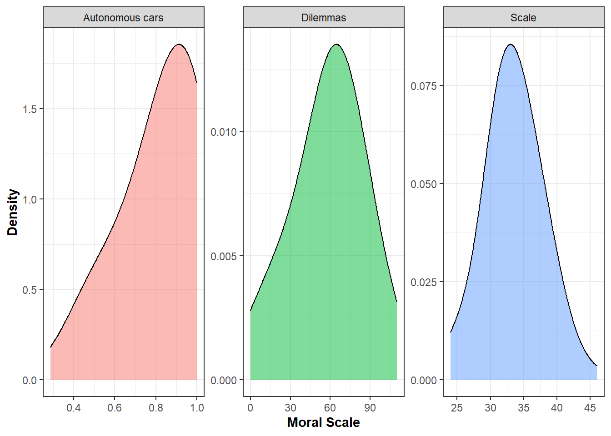
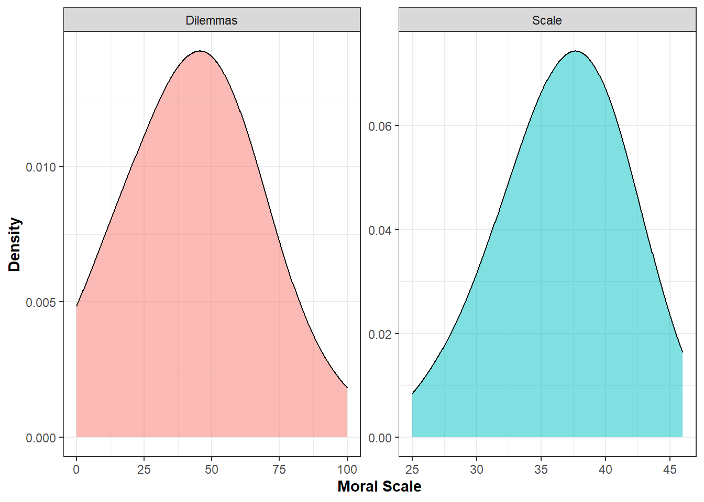

5 Study 5
Data_Study5_Wide <- subset(Data_Meta_Raw.wide, Study == 5)5.1 Data analysis
Run a multivariate regression for each sleep variable (IV) on endorsement of moral principles assessed using moral dilemmas and a moral scale as DVs
QualCroLMS5<-lm(cbind(Moral_DIL, Moral_SCA)~SleepQualCro,Data_Study5_Wide)
QualAcuLMS5<-lm(cbind(Moral_DIL, Moral_SCA)~SleepQualAcu,Data_Study5_Wide)
QuantCroLMS5<-lm(cbind(Moral_DIL, Moral_SCA)~SleepQuantCro, Data_Study5_Wide)
QuantAcuLMS5<-lm(cbind(Moral_DIL, Moral_SCA)~SleepQuantAcu, Data_Study5_Wide)Extract coefficients (F test and p-values) from multivariate regression models
out <- car:::print.Anova.mlm
body(out)[[16]] <- quote(invisible(tests))
body(out)[[15]] <- NULL
#Chronic Sleep Quality
FQualCroS5<-round(do.call(rbind, out(Anova(QualCroLMS5, test.statistic="Pillai")))[3], digit=2)
pQualCroS5<- round(ifelse(do.call(rbind, out(Anova(QualCroLMS5, test.statistic="Pillai")))[6]*4<.99, do.call(rbind, out(Anova(QualCroLMS5, test.statistic="Pillai")))[6]*4, .99), digit=2)
#Acute Sleep Quality
FQualAcuS5<-round(do.call(rbind, out(Anova(QualAcuLMS5, test.statistic="Pillai")))[3], digit=2)
pQualAcuS5<- round(ifelse(do.call(rbind, out(Anova(QualAcuLMS5, test.statistic="Pillai")))[6]*4<.99, do.call(rbind, out(Anova(QualAcuLMS5, test.statistic="Pillai")))[6]*4, .99), digit=2)
#Chronic Sleep Quantity
FQuantCroS5<-round(do.call(rbind, out(Anova(QuantCroLMS5, test.statistic="Pillai")))[3], digit=2)
pQuantCroS5<- round(ifelse(do.call(rbind, out(Anova(QuantCroLMS5, test.statistic="Pillai")))[6]*4<.99, do.call(rbind, out(Anova(QuantCroLMS5, test.statistic="Pillai")))[6]*4, .99), digit=2)
#Acute Sleep Quantity
FQuantAcuS5<-round(do.call(rbind, out(Anova(QuantCroLMS5, test.statistic="Pillai")))[3], digit=2)
pQuantAcuS5<- round(ifelse(do.call(rbind, out(Anova(QuantAcuLMS5, test.statistic="Pillai")))[6]*4<.99, do.call(rbind, out(Anova(QuantAcuLMS5, test.statistic="Pillai")))[6]*4, .99), digit=2)Prepare data for plots
Data_PlotS5<- Data_Study5_Wide %>%
pivot_longer(
cols=c(SleepQualCro, SleepQualAcu, SleepQuantCro, SleepQuantAcu),
names_to="SleepType") %>%
rename("SleepValue"=value) %>%
mutate(
SleepLength=case_when(
SleepType=="SleepQualCro" | SleepType=="SleepQuantCro"~"Chronic",
SleepType=="SleepQualAcu" | SleepType=="SleepQuantAcu"~"Acute"),
SleepQuanthist=case_when(
SleepType=="SleepQualCro" | SleepType=="SleepQualAcu"~"Sleep Quality",
SleepType=="SleepQuantCro" | SleepType=="SleepQuantAcu"~"Sleep Quantity"),
MoralZ_DIL=scale(Moral_DIL, center = TRUE, scale = TRUE),
MoralZ_SCA=scale(Moral_SCA, center = TRUE, scale = TRUE))
Data_PlotS5$SleepType<-dplyr::recode(Data_PlotS5$SleepType,
"SleepQualCro" = "Quality of Chronic Sleep",
"SleepQualAcu" = "Quality of Acute Sleep",
"SleepQuantCro" = "Quantity of Chronic Sleep",
"SleepQuantAcu" = "Quantity of Acute Sleep")
Data_MoralS5<- Data_Study5_Wide %>%
pivot_longer(
cols=c(Moral_DIL, Moral_SCA),
names_to="Outcome_moral") %>%
rename("MoralValue"=value)
Data_MoralS5$Outcome_moral<-dplyr::recode(Data_MoralS5$Outcome_moral,
"Moral_DIL" = "Dilemmas",
"Moral_SCA" = "Scale")
Data_ScatterS5<- Data_PlotS5 %>%
pivot_longer(
cols=c(MoralZ_DIL, MoralZ_SCA),
names_to="Outcome1") %>%
rename("MoralValue1"=value)
Data_ScatterS5$Outcome<-dplyr::recode(Data_ScatterS5$Outcome,
"MoralZ_DIL" = "Dilemmas",
"MoralZ_SCA" = "Scale")5.2 Summary of Study 5 results
Put results in a table
SleepMarker<-c("Quality Chronic","Quality Acute","Quantity Chronic","Quantity Acute")
FS5<-c(FQualCroS5,FQualAcuS5,FQuantCroS5,FQuantAcuS5)
pvalS5<-c(pQualCroS5,pQualAcuS5,pQuantCroS5,pQuantAcuS5)
NS5<-c(length(QualCroLMS5$fitted.values)/2,
length(QualAcuLMS5$fitted.values)/2,
length(QuantCroLMS5$fitted.values)/2,
length(QuantAcuLMS5$fitted.values)/2)
ResultsStudy5<-data.frame("Sleep Indicator"=SleepMarker, "F-test"=FS5, "p values"=pvalS5, "N"=NS5)
gt(ResultsStudy5)| Sleep.Indicator | F.test | p.values | N |
|---|---|---|---|
| Quality Chronic | 0.71 | 0.99 | 105 |
| Quality Acute | 0.70 | 0.99 | 105 |
| Quantity Chronic | 0.22 | 0.99 | 105 |
| Quantity Acute | 0.22 | 0.99 | 105 |
5.3 Plots of Study 5 results
Plot distribution for each sleep indicator
DistQualityS5<-ggplot(Data_PlotS5, aes(x=SleepValue, fill=factor(SleepLength))) +
geom_density(alpha=0.5, size=0.5,adjust = 2) +
scale_fill_manual(values=c("#193B94", "#BDCAEE")) +
theme_bw() +
ylab("Density") + xlab("") +
facet_wrap(~factor(SleepQuanthist), scale="free_x") +
guides(fill=guide_legend("Sleep Length")) +
theme(
axis.title.y = element_text(size = 11, hjust = 0.5, face="bold"),
axis.title.x = element_text(face="bold", size = 11, hjust = 0.5),
legend.position="top",
legend.title = element_text(colour="black", size=10, face="bold"))
DistQualityS5
Plot distribution for the scores to the dilemmas and moral scale
DistMoralS5<-ggplot(Data_MoralS5, aes(x=MoralValue, fill=factor(Outcome_moral))) +
geom_density(alpha=0.5, size=0.5,adjust = 2) +
theme_bw() +
ylab("Density") + xlab("Moral Scale") +
facet_wrap(~factor(Outcome_moral), scale="free") +
guides(fill="none") +
theme(
axis.title.y = element_text(size = 11, hjust = 0.5, face="bold"),
axis.title.x = element_text(face="bold", size = 11, hjust = 0.5))
DistMoralS5
Scatterplots
ggplot(Data_ScatterS5, aes(x=SleepValue, y=MoralValue1,
color=Outcome1, fill=Outcome1)) +
geom_smooth(method="lm")+
geom_point(alpha=0.2)+
facet_wrap(~factor(SleepType), scales="free_x") +
theme_bw() + ylab("Utilitirianism") + xlab("") +
theme(axis.title.y = element_text(size = 11, hjust = 0.5, face="bold"),
axis.title.x = element_text(face="bold", size = 11, hjust = 0.5)) +
guides(size=FALSE, colour=FALSE) +
scale_fill_manual(values=c("red","#193B94"))+
scale_color_manual(values=c("red","#193B94"))## `geom_smooth()` using formula 'y ~ x'